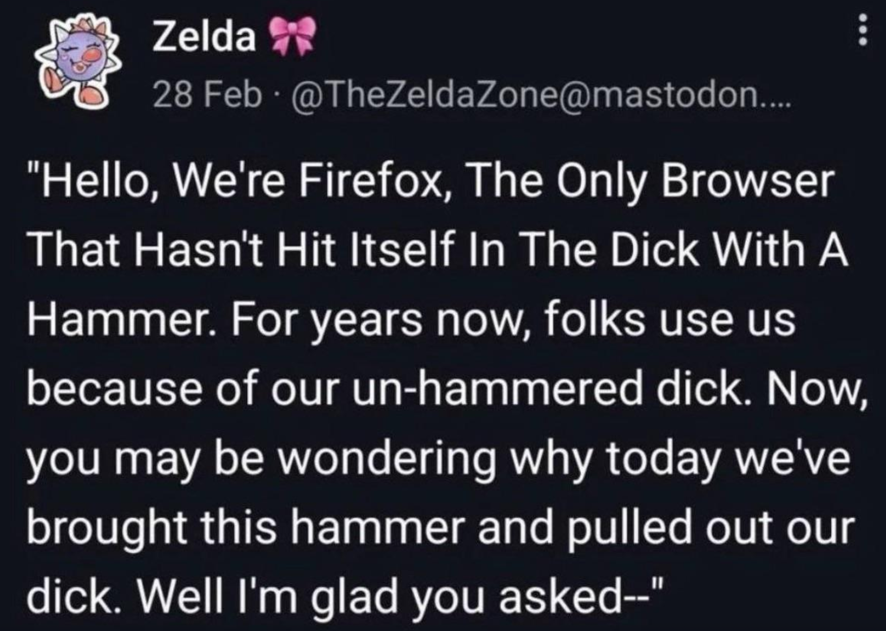

[2026/02/1]
100 Webmaster Questions
- 1. Please introduce yourself.
- I like to draw and buy cute stickers...
- 2. How long have you been making websites?
- I’ve made a few basic ones I think starting 2021 or 2022, but only finally made a polished finished one (the website you are on right now) by 2024.
- 3. And what got you into the hobby?
- I first made a website on Neocities as an OC storage after being inspired by Rambamboo's OC Directory a long time ago. It was very barebones. Over time I explored other sites on Neocities and decided that I wanted to make my own actual updating website. And then Neocities got blocked in Indo so I only really started coding as a hobby on Nekoweb. Now I have a VPN and I host everything on Github.
- 4. What kind of website are you most interested in?
- I like websites made by other creative people to showcase their drawings or blogs. I spend an embarrasing amount of time reading blogs of strangers.
- 5. What's your workflow? Do you plan your websites out thoroughly or do you come up with the design as you go along?
- I sketch out on paper an idea of where I want each box to go, and what each box should hold. When I'm done with that, I already have an idea of how I want the final site to look and I just code referencing my sketch, but sometimes I change the design along the way.
- 6. Please link to your biggest inspirations.
- DOKODEMO is probably one of the very first websites everyone looks at and references for inspiration.
- derrek.org inspired the structure of my navigation bar, frame layout and art gallery layout.
- zona.plankton inspired the structure of my navigation bar and frame layout, and inspired me to start writing more.
- Yatagarasu made me realize I want a simple and contained website.
- 7. What's your favourite part about making websites?
- I like designing them :]
- 8. And the thing you struggle with the most?
- Coding itself (lol)
- 9. Do you keep the same layout on all of your pages? Or do you use different ones?
- As of this time of writing, my website is a single-page because I want it to be as simple and consistent as possible! I’ve thought of doing different page layouts for shrines; but decided against it.
- 10. How confident are you with CSS?
- Not very confident.. I admittedly don't use it as much as I should.
- 11. Do you know how to correctly use <dl>?
- 12. What is your favourite HTML element?
- I like iframes they are my best friends.
- 13. If you're making a new web page from scratch, what is the first thing you do?
- Copy paste everything from a previous webpage I did, keep the structure and code, and just rewrite the content.
- 14. Do you know JavaScript?
- 15. How about PHP?
- Yes
- 16. Does your website have a theme that you stick to?
- I think it’s pretty consistent throughout. I reuse the same colors and fonts and overall structure at least.
- 17. Are you more focused on content or design?
- Both! I don’t see the point of having a very pretty website with zero content. However I do enjoy simple/barebones websites with tons of content. If I had to, I would pick the latter over the former.
- 18. Do you own a domain name? If not, would you ever want to?
- Yes :] I got it at Porkbun, mine is only 10 usd a year. Highly recommend.
- 19. What do you think of nostalgia-focused or "retro" websites?
- For the most part I don’t really care about them I didn’t grow up on early-internet :p
- 20. Is your HTML valid? Do you even check?
- I hope so. I try to make sure there’s no errors.
- 21. What are your opinion on buttons and banners?
- I like them a lot :] Especially when the banner changes on each page.
- 22. What do you think of button walls in particular?
- Really like them. I used to spend a lot of time just looking through everyone's button walls.
- 23. If you started over again, would you make something similar or completely different?
- Something similar. I’m very happy with my site! Although I’d actually make each writing page have its own permalink because one time a friend of mine had trouble linking a specific blog I did. Not really sure how to do that though, I'll figure it out.
- 24. Are you envious of other people's websites?
- Nop.
- 25. What text editor do you use?
- Visual Studio Code.
- 26. Why do you use that one?
- I have a live preview plugin and it helps a ton.
- 27. Do you host your image files on your web server, or on another host?
- On my own server.
- 28. This might not be relevant to you, but what's your opinion on the Neocities vs. Nekoweb debate?
- Don’t care
- 29. How much server space would you estimate your main website takes up?
- I have no idea :3 Not a lot I think, although my drawing and photo files might take a heavy chunk out of storage space.
- 30. Do you keep local backups of your files?
- No… I should…
- 31. Do you prefer simple or highly visual websites?
- I like simple websites! Highly visual websites get overwhelming for me.
- 32. Do you stick to certain colours? Do you do that on purpose, or is it your subconscious?
- I do (but only as accent colors). Red and blue. I think it’s a nice combination. If I didn’t use that, I’d do dark green and orange/dark red.
- 33. Have you ever thought about quitting? Why?
- Never
- 34. Do you have many webmaster friends, or is it a solitary hobby?
- It started out as a solitary hobby but I’m trying to get more of my friends into the indie web. I don’t know if it’s working. I still share with them what I’m doing anyway.
- 35. Do people in your real life know about your website?
- Only a few friends.
- 36. Do you update your website very often? How often is "very often"?
- I think I update it pretty often.. At least once a month.
- 37. And the overall design, do you change that much? Why or why not?
- No. I like keeping everything simple and I don’t want to change that. I follow a layout formula.
- 38. Is your website more you-focused, hobby-focused, or outside world-focused?
- A combination of me and hobby-focused (more leaning to the latter). I guess the outside-world focus part is my photos tab.
- 39. Do you do web design professionally?
- No.
- 40. If not, would you like to? And if you're comfortable answering, what do you do for work?
- Sure if it's not completely soul sucking and pays me on time. I currently work at a printing shop so I deal with graphics on a computer all day anyway. One day I want to work on publishing or something related to art.
- 41. Do you communicate with people by email very much?
- Not very much but I wish to do it more! I think it’s fun. It’s like modern penpalling.
- 42. Some people reject social media and use websites as a replacement. Do you keep social media outside of your website?
- I only use social media because it’s a source of my income and commissions. I wish I didn’t have to use it though.
- 43. How about instant messengers? Do you use a mainstream one like Discord or Telegram? Or something like Matrix? Do you avoid them?
- Mainly Whatsapp. Then Discord. I have LINE for a few friends too. I wish more people used LINE I have cute pokemon stickers there.
- 44. Do you listen to music while you work on websites? If so, what kinds of artists?
- No, I get distracted… when I code I need to think really really hard.
- 45. Do you keep everything you make on one website, or do you have more than one?
- I keep everything I make on one site!
- 46. On a similar note, do you keep to one topic on your site, or many?
- Many I think.
- 47. Do you present your real self, or at least try? Or do you construct a persona on purpose?
- I present as my real self but I get shy…
- 48. Have you ever made a good friend thanks to your website?
- Not yet.
- 49. Are you happy with the way HTML and CSS currently work?
- Yes if it was any more complex I’d pass away.
- 50. What are practices that you think people should avoid?
- Other than hotlinking people’s buttons, I think you should do what you want. You can even take my code if you want. I don't care.
- 51. What about under-utilised practices, or things you think people should do more?
- Better navigation. I get lost easily on sites.
- 52. Do you use a lot of semantic HTML? Or are you guilty of generic structure?
- I am not guilty of generic structure in fact I excel at it
- 53. Do you consider different browsers?
- No!! It's too difficult to figure out how to format my site on mobile. Maybe one day….?
- 54. Speaking of, what's your preferred browser? Convince your readers why they should use it.

- 55. And what OS are you on?
- I use MacOS for coding and Windows for drawing (I am aware I have it the wrong way around)
- 56. Do you have a strong opinion on that, or do you just happen to use it?
- (Unfortunately, I’m in too deep to flip it the other way around)
- 57. Are your websites mobile-friendly?
- No!!!!!!
- 58. What are your thoughts on autoplay?
- Terrible!!!!!! Don't fucking put it on your site I will click off immediately!!!
- 59. What are your thoughts on webrings? Are you in any?
- I really like them! I think they’re the perfect solution to finding communities on the indie web!!! I’m in a few and I’m always joining more :]
- 60. Do you have any web shrines? What do you like to see in that sort of page?
- A few! On other’s web shrines I like reading them gush about something particular and why it matters to them so much. Yes tell me about your pokemon plushie collection
- 61. Are your websites "cliche", in your opinion?
- Idkkkk
- 62. What is your ideal website? Are you striving for that, or for something else?
- My website right now is basically perfect and ideal for me (minus mobile optimization and the inability to link blogs directly sorry)
- 63. Are you an artist? Do you draw or design your own assets?
- Yes... I'm too lazy to actually design my own assets but I'll probably try in the future.
- 64. What are your favourite resource sites?
- W3Schools is an amazing resource for anyone just starting out. It’s helped me figure out 50% of my stuff. Other than that I just look at the source codes of websites I like. It helped me figure out the other 50% of how HTML works. Do those two and you're all set.
- 65. Is there a habit you just can't get away from no matter how hard you try?
- I keep eating sweets when I know it’s bad for me :(
- 66. What's your biggest advice for a new webmaster?
- Look at the source codes of your favorite sites and understand how they work!! It’s just like looking at references when drawing. You might think you’re cheating but you really aren’t. It’s a vital part of the learning process!!! And ignore when webmasters put comments on the top saying not to look at their source code I think gatekeeping indie web is STUPID!!!!
- 67. Do you keep all your styling in CSS? Or do you hard-code some?
- Mostly CSS but I hard-code some. I don't use CSS as often as I like I think
- 68. What do you think of frameset layouts?
- I think they’re fine.
- 69. How about table-based layouts?
- My entire website is a table-based layout. I depend on them to make logical sense of coding. If table-based layouts didn’t exist I’ll pass away
- 70. Do you subscribe to the ideas of "one-column", "two-column" and "three-column" layouts? Do you use any of these?
- Is table-based layouts not what this is
- 71. Do you spend longer on the HTML or the CSS?
- On the HTML. My CSS is super simple because I don't have the power for it.
- 72. Have you ever made a page with no CSS? It's useful for your thoughts.
- In school.
- 73. Do you ever find yourself making layouts with nothing to put on them? Or do you only make layouts when the need arises?
- I can’t believe people make layouts for fun. I only do it when I need to.
- 74. Would you consider yourself a beginner? Or advanced? Somewhere in the middle?
- I’m like when a person draws good but skips the fundamentals of art. Apply that to website making. I know how to make things look and appear the way I want it but I can’t explain why or how. Somewhere in the middle leaning more towards a beginner.
- 75. Do you have a habit of looking at the source code of websites you visit?
- When I was starting to learn how to code it was all I did. Now not so much now that I know the structure of how I want my website to be.
- 76. How did YOU learn how to make websites?
- Finding cool websites and looking at source codes and W3schools!!! And a lot of experimentation on Neocities and Nekoweb.
- 77. Do you ever force elements to do things they're not supposed to?
- Probably when I was starting out only for annoying syntax errors to pop up which made me stop.
- 78. Thoughts on floating elements?
- Works situationally.
- 79. When you're sizing stuff, what do you use first? Do you use px, em, %, or something else?
- Px I don't understand how everything else works :3
- 80. Do you have a favourite font?
- No but I like machine-looking fonts. The one my website uses is Oxygen Mono which I picked because I wanted something between Courier New and Arial.
- 81. Would you run a website with another person? How would that work?
- I don’t know how to do that and I'm too lazy.
- 82. Do you surf the Web to find new personal websites very often?
- Yes! It’s one of the only good uses of using an internet browser.
- 83. Do you bookmark other people's websites? How would you feel knowing someone else bookmarked yours?
- I used to just study source codes but not anymore - I just link people’s sites to my about page now to look at them. If someone else bookmarked my page I’d be flattered. They should tell me about it.
- 84. What do you want people to be most impressed with when they see your website?
- My drawings…
- 85. Are you interested in technology outside of websites? Do you collect?
- Not really. I like cute old cameras and music players and flip phones but I wouldn’t collect them myself.
- 86. How often and for how long are you online?
- I depend on being online for my livelihood :(
- 87. When it comes to your website, who is your target audience?
- Other artists and people who like art :3 I also like reaching other southeast asians!!!
- 88. Have you ever been interested in XHTML?
- What is that
- 89. Do you program in general? Have you ever written a program for use with or on your website, not counting simple JavaScript?
- Hell no
- 90. Speaking of programs that help you make websites, what do you think of static site generators (SSGs)? Have you ever used one?
- Never used one it’s only a text editor here babey
- 91. Do you keep a hitcounter? Why or why not?
- I love hit counters but I don’t know how to make it work on Github. I should seriously bother my friend to set it up for me.
- 92. Do you frequent forums? Which ones?
- I run out of interest quickly after a week or so.
- 93. Do you write your page content directly into the editor, or do you prepare it elsewhere, like a text document or a Word document?
- Just get Visual Studio Code and the live preview plugin man it's all you need
- 94. Do you think you appear cool to others? A more accurate answer now: do other people ever say you're cool?
- No, but I think I appear sincere which is enough.
- 95. Are you embarrassed of your old work? Have you ever deleted everything out of shame?
- I am a bit embarrassed about it (especially my sketchbook pages) but I try to share what I can because 1) seeing people’s creative growing pains when you're a beginner is inspiring because you go "oh if I continue to work hard I can get to their level one day" and 2) I get sad when my favorite artists delete their old works so I try not to do that because I know the feeling.
- 96. Would you close down your website if you couldn't update it, or would you leave an archive?
- I’d leave it as an archive. Not sure about keeping the domain subscription though.
- 97. Do you reveal a lot about yourself on your website? Or are you more secretive?
- I want to be more secretive but something about blogging on a handcoded site makes you want to say a bunch of nonsense lol
- 98. Are you willing to reveal who your best online friend is, and/or if they have a website?
- Everyone look at Aidan’s website now!!!! We’ve been friends for almost a decade and he's an awesome writer he helps me with proofreading and editing stuff I write.
- 99. And do you optimise the images on your website?
- Not my thumbnails (since they’re already tiny) or my drawing and photo files themselves but everything else yes. But I tend to forget to dither pictures I use on blogs. I should fix that. But…. I like good image quality. What a sacrifice.
- 100. We're out of time! How do you feel after answering 100 questions? ....other than exhausted.
- I just spent one hour of company time answering this questionnaire because there’s nothing to do at work I’m happy!!! I’m gonna go home now
click me!

link me!


link me!
© 2024-2026 amfmradio.org